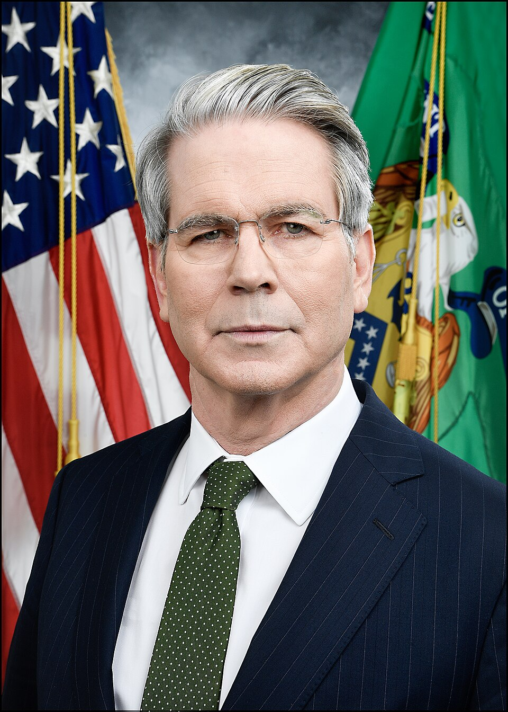

Luego de que el Gobierno anticipara que este viernes el Fondo Monetario Internacional (FMI) aprobará el nuevo acuerdo con la Argentina, el titular del Palacio de Hacienda, Luis “Toto” Caputo, informó vía su cuenta de la red social X que el secretario del Tesoro de Estados Unidos, Scott Bessent, viajará a Buenos Aires el próximo 14 de abril para reunirse tanto con el presidente Javier Milei como con referentes del sector privado para “reafirmar el pleno apoyo de Estados Unidos a las audaces reformas económicas” de la gestión libertaria.
El secretario del Tesoro de Estados Unidos, Scott Bessent
Luego de que el Gobierno anticipara que este viernes el Fondo Monetario Internacional (FMI) aprobará el nuevo acuerdo con la Argentina, el titular del Palacio de Hacienda, Luis “Toto” Caputo, informó vía su cuenta de la red social X que el secretario del Tesoro de Estados Unidos, Scott Bessent, viajará a Buenos Aires el próximo 14 de abril para reunirse tanto con el presidente Javier Milei como con referentes del sector privado para “reafirmar el pleno apoyo de Estados Unidos a las audaces reformas económicas” de la gestión libertaria.
En tanto, un comunicado de la Embajada de los Estados Unidos en la Argentina sostuvo que, durante su visita, el secretario Bessent se reunirá con el presidente Javier Milei y el ministro Caputo, así como con otros miembros del gobierno y la comunidad empresarial de Argentina.
“Con el presidente Milei, la Argentina ha llevado a cabo políticas a través de acciones, no sólo palabras. Como destacó el presidente Donald J. Trump, el presidente Milei ha sacado a la Argentina de una profunda crisis económica. Durante sus reuniones en la Argentina, el secretario Bessent reiterará el firme respaldo de Estados Unidos a la implementación continua de la sólida agenda económica del presidente Milei y alentará a la comunidad internacional a apoyar plenamente sus esfuerzos de reforma económica”, aseguraron.
El viaje del funcionario es un fuerte gesto en el marco de la negociación con el Fondo y el diálogo entre ambos países por los aranceles del 10% que el presidente de Estados Unidos, Donald Trump, le impuso a la Argentina y decenas de países.